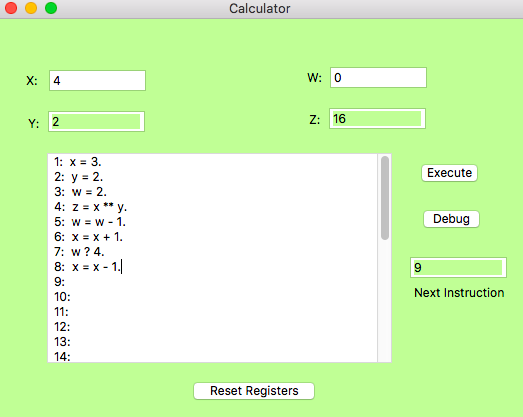
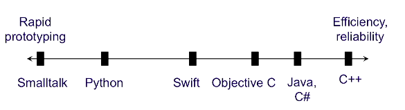

My Projects
An android app
TicTacToeMagic
July 2018 - Present
Hobby Project
Version 1 live on Google Play Store. It is a classic tic-tac-toe game based on Harry Potter theme. You get to choose whether you start the game as a muggle or as a witch / wizard. If you lose a game, Moaning Myrtle annoys you with her moan. If you win, you get assigned to a new house (Griffindor / Hufflepuff / Slytherin / Ravenclaw) and you earn points for your current house.
This app gives a magical experience along with a classic game.

A toy API
Passwd as a Service
Jan 2019
Hobby Project
A toy HTTP service that exposes the user and group information on a UNIX-like system that is usually locked away in the UNIX /etc/passwd and /etc/groups files.
Food Allergen Detector
Food Allergen Detector (FAD)
August 2018 - November 2018
Course Project (Software Engineering)
Implemented and tested this Android app as part of a Software Engineering class project in a team of four. We used the Agile methodology for this project.The Food Allergen Detector is a prototype app to demonstrate the functionality of the final mobile app that aims at providing an interface to users for scanning food items and purchasing them only if they are allergen-free.
We also designed a virual reality project called 'Mind Palace' using Waterfall model and following the Software Development Life Cycle.

Set Calculator
Program Calculator
Projects Using the First General-Purpose Object-Oriented Language
October 2018
Course Projects (Object Oriented Languages and Environment)
Smalltalk is a pure object oriented language (unlike C++) which is great for building prototypes due to its OO features - it's dynamincally typed which means you can bind any object to any type of identifier (like in Python). It is garbage collected, so you do not have to worry about deallocating memory (like Java). It has single inheritance (like C# and Java and unlike Python) which means you do not have to worry about identifier conflicts of data members and methods inherited from multiple classes. Identifiers are only references (like Java) so we don't have to deal with the complexities introduced by value identifiers. It is interpreted (like Python) so you don't need to save separate files for tiny test code snippets... just write it on the IDE and the interpreter gives the effect of the code on each line right away. And, it's a really small language! Plus, it provides you a GUI!
This is a screenshot borrowed from Prof. Ugo Buy's slides depicting the spectrum of object oriented languages.
- Music Library Service: The service maintains a set of audio files containing a large number of songs and delivers a music file upon demand from a service user. These music clips are stored in files most of the time and are dynamically read into memory using smart pointers.
- Programmable Calculator: Supports branching, assignment and mathematical expressions in the program. Also provides debugging functionality.
Online Card Game (War)
Simplified WAR: An Online Card Game
March 2018
Course Project (Introduction to Networking)
Implemented a cross-platform server that can handle multiple requests simultaneously (tested for 1000 simultaneous requests) and a client for a very simple stateful network protocol. The war server listens for new TCP connections on a given port. It waits until two clients have connected to that port. Once both have connected, the game starts and continues until each player has sent all of their cards and received all of their play results; after receiving the last play result, the clients disconnect; after sending the last play result, the server also disconnects.This was implemented in Python and multiple games were handled using the asyncio library.

Console Driver and Graphics Driver

Splash Screen Boot Sector
Console Driver and Graphics Driver
October 2017
Course Project (Operating Systems)
Extended the existing console device driver in XV6 OS to support colored text. Also created a brand new device driver for graphics display. These projects were implemented using C and Assembly Language.
Splash Screen Boot Sector
September 2017
Course Project (Operating Systems)
Created a splash screen boot sector using BIOS services. This involved creating a "disk" containing the boot sector and the picture to be shown; waiting for the user to press a key, and outputting text on the console; changing the video mode and palette settings; reading an image from disk into memory and producing a nice-looking, alternative picture to display, in the right format.

Reality Mining
Predicting Space Utilization using Reality Mining
August 2016 - January 2017
Graduate Scholarly Project
This is a research project that uses predictive analysis of user mobility data to deduce space utilization patterns and deriving further insights.

Check That - Android App
Check That
August - November, 2015
Course Project (Mobile Computing)
Designed and implemented an Android app in a team of six. This app has following three features -
- Time - Automate organization of daily task-lists and send reminders based on time.
- Location - Create geofences for locations related to task and send reminders when user enters the geofence.
- Social - Share task with friends. Update task-list of every member of the group having that task on their list on its completion.

Integrated Experience Manager
Integrated Experience Manager
February 2015 - June 2015
Work Project, SapientNitro
Integrated Experience Architecture (IEA) is designed to help companies deliver rich, immersive, digital experiences with award-winning capabilities and functionality to enable always-on customers to interact and transact regardless of device. IEA also has been built to take head-on the challenging requirements of large-scale transactional sites, such as those commonly found in large digital commerce properties. In sum, IEA enables organizations to take full advantage of Adobe Marketing Cloud, both in terms of its current capabilities and its predicted evolution.

Capella University Website
Capella University
April 2014 - December 2014
Work Project, SapientNitro
Live at https://www.capella.edu/

Mohegan Sun
Mohegan Sun - UAT Support
January 2014 - March 2014
Work Project, SapientNitro
Live at https://www.mohegansun.com/